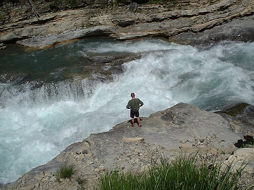

Whitewater forms in the context of rapids, in particular, when a river's gradient changes enough to generate so much turbulence that air is trapped within the water. This forms an unstable current that froths, making the water appear opaque and white.